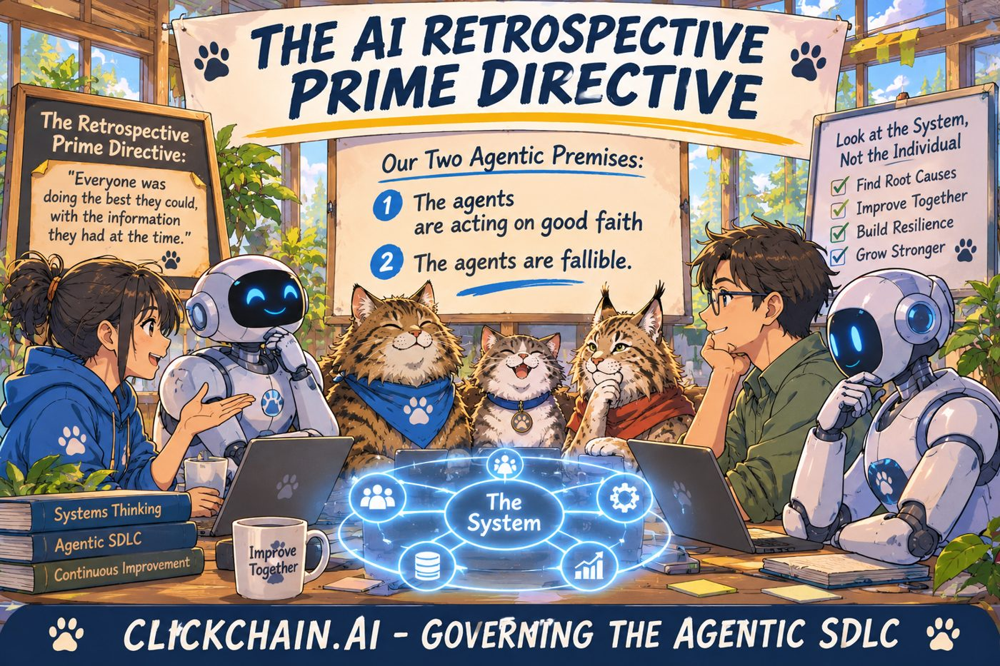

The AI Retrospective Prime Directive
November 18, 2026

To continuously improve your agentic system design, there are two fundamental Agentic Premises you must have.
- The agents are acting on good faith
- The agents are fallible.
In agile software development, for humans, we have "the Retrospective Prime Directive", where we say that in order to have a retrospective that produces value, we must take as our premise:
"Everyone was doing the best they could, with the information they had at the time."
This is essentially the same thing as our agentic premises, articulated from a different angle.
For humans, retrospective participants can sometimes see this Prime Directive as a "get out of jail free card" for team members who they feel are falling short, and should have some kind of comeuppance.
For agents and humans, the sole purpose of the Prime Directive and the Agentic Premises, is to bias us towards looking at the system and the relationships, and solve problems at that level.
To look at individuals is to drown in people fixing - and it's rare to have a licensed therapist on your team capable of such efforts. And that'd probably be an HR issue in any case.
At one engagement in this past year, I heard one manager say "How do you punish the agents when they do something wrong?". You may laugh, but inside every one of us are at least some whispers of these punitive frames, that bias us against systems thinking frames.
When we presume good faith, we have a chance to actually solve problems, because we are looking at the system.
Field notes from my work at ClickChain AI, first posted on LinkedIn. I write the notes by hand; the images are made with AI.